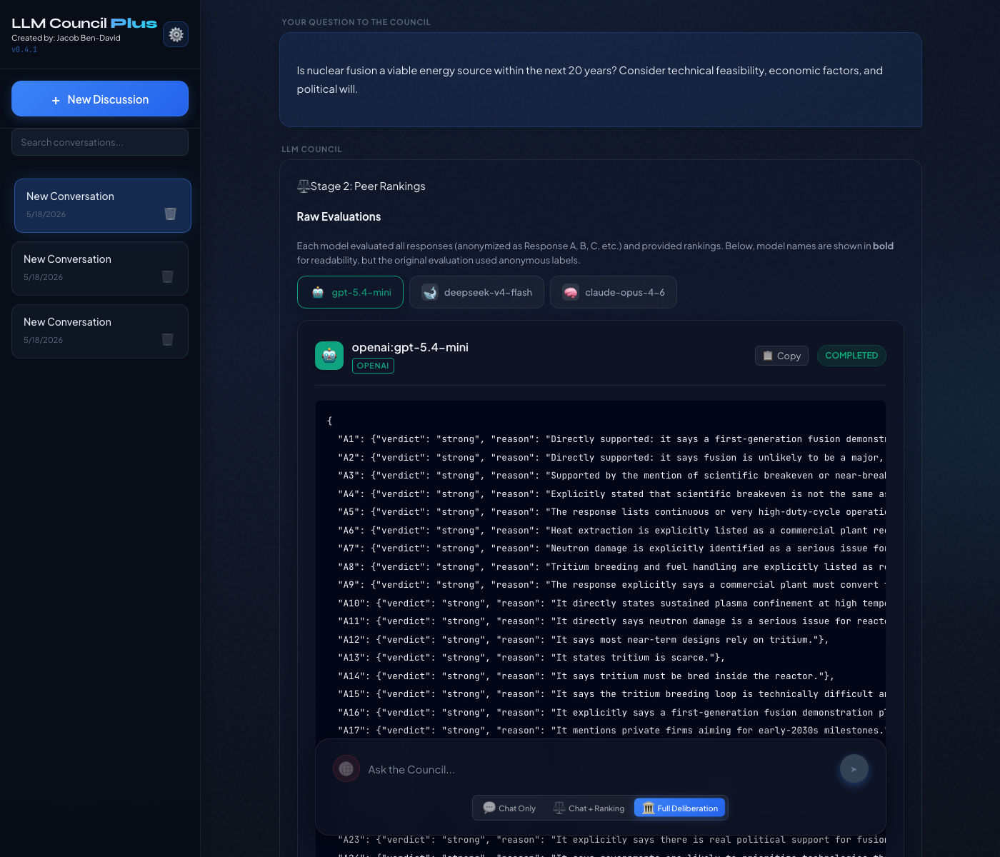
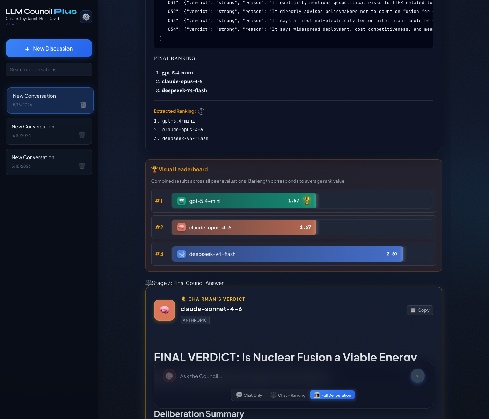
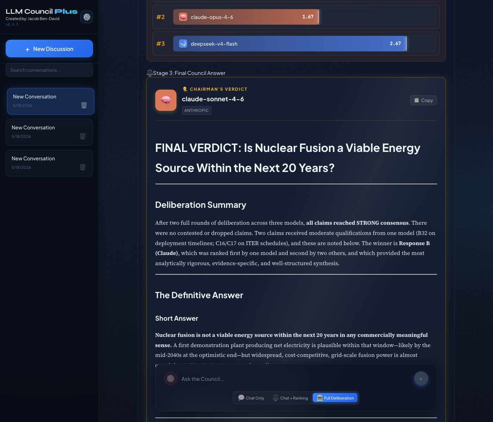

Phase 2 Evidence: Claim-Level Debate in Action
Live 2-round claim-mode debate with 4 models, captured 2026-05-18.
Branch: feat/iterative-debate-phase2 |
PR: #11
1. The Debate Question
Config: Claim-level critique mode, 2 rounds, 4 council models (gpt-5.4-mini, claude-opus-4-6, deepseek-v4-flash, gemini-2.5-flash-lite), chairman: claude-sonnet-4-6
2. Round 1: Claims Extracted & Evaluated
After Stage 1 responses, the chairman decomposed all 4 responses into 101 canonical claims. Each claim was then evaluated by all peers as STRONG, WEAK, or FLAWED.
Two claims did NOT get unanimous STRONG in Round 1:
(DeepSeek's claim. Date was contested by peers as potentially outdated given ITER delays.)
(Claude's claim. Peers saw it as vague "always 30 years away" framing rather than a falsifiable statement.)
The other 99 claims were rated STRONG with high agreement (most at 100%).
Round 1 Rankings
| # | Model | Avg Rank |
|---|---|---|
| 1 | gpt-5.4-mini | 1.75 |
| 2 | deepseek-v4-flash | 2.00 |
| 3 | claude-opus-4-6 | 2.00 |
| 4 | gemini-2.5-flash-lite | 4.00 |

3. Round 2: Models Revise with Claim Feedback
Each model received personalized feedback in Round 2:
- Their own claims with peer verdicts (B3 was flagged ACCEPTABLE for DeepSeek)
- Top-rated STRONG claims from other models for cross-pollination
What changed?
The 2 non-strong claims from Round 1 were addressed:
- B3 (ITER first plasma date) — DeepSeek refined the claim in Round 2, adding qualification about repeated delays. See C16/C17 in Round 2.
- D26 (vague "30 years" framing) — Claude dropped the vague claim entirely in Round 2 and replaced it with more specific timeline claims (B27, B31, B32).
Response Growth (models elaborated with feedback)
| Model | Round 1 | Round 2 | Change |
|---|---|---|---|
| gpt-5.4-mini | 2,974 chars | 3,326 chars | +12% |
| deepseek-v4-flash | 4,151 chars | 6,110 chars | +47% |
| claude-opus-4-6 | 4,446 chars | 4,891 chars | +10% |
| gemini-2.5-flash-lite | 9,139 chars | (timed out in Round 2) | |
Rankings Shifted
| Model | Round 1 | Round 2 | Movement |
|---|---|---|---|
| gpt-5.4-mini | #1 (1.75) | #1 (1.67) | Held top |
| claude-opus-4-6 | #3 (2.00) | #2 (1.67) | Up 1 |
| deepseek-v4-flash | #2 (2.00) | #3 (2.67) | Down 1 |

4. Chairman's Final Verdict References Claim Consensus

The chairman used claim verdict data to make its final determination. This is the key Phase 2 improvement: the synthesis is grounded in specific, evaluated claims rather than vague impressions.
5. Settings: Critique Mode Selection


6. API Validation
| Request | Result |
|---|---|
| PUT /api/settings {"critique_mode": "freeform"} | 200 OK |
| PUT /api/settings {"critique_mode": "paragraph"} | 200 OK |
| PUT /api/settings {"critique_mode": "claim"} | 200 OK |
| PUT /api/settings {"critique_mode": "invalid"} | 400 Rejected |
7. Test Suite: 49 Tests Passing ALL PASS
| Test File | Tests | What's Covered |
|---|---|---|
test_debate.py | 23 +12 new | convergence, truncation, paragraph segmentation, claim aggregation, cross-pollination |
test_debate_integration.py | 8 | multi-round orchestration, convergence, prompt override |
test_json_repair.py | 8 new | JSON extraction, repair, markdown fence, arrays, edge cases |
test_settings_backup.py | 10 | export, import, reset, auth |
8. How Claim-Level Debate Works
9. Files Changed (13 files, +1,191 / -48 lines)
| File | Change |
|---|---|
backend/debate.py | Orchestrator extended for claim/paragraph paths (+490 lines) |
backend/json_repair.py | NEW JSON extraction and repair |
backend/prompts.py | 7 new prompt templates for claim/paragraph modes |
backend/council.py | per_model_messages, Stage 2 prompt_override |
backend/main.py | Accept paragraph/claim in validation |
frontend/.../ClaimCards.jsx | NEW Claim card UI with expandable verdicts |
frontend/.../Stage2.jsx | Renders ClaimCards when data present |
frontend/.../CouncilConfig.jsx | Critique mode radio buttons |
backend/tests/test_debate.py | 12 new tests for Phase 2 |
backend/tests/test_json_repair.py | NEW 8 tests |